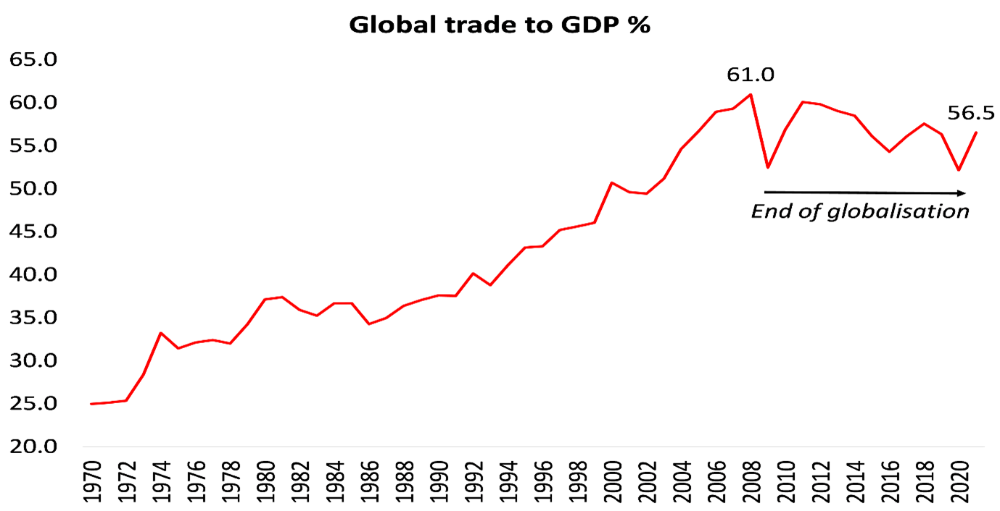
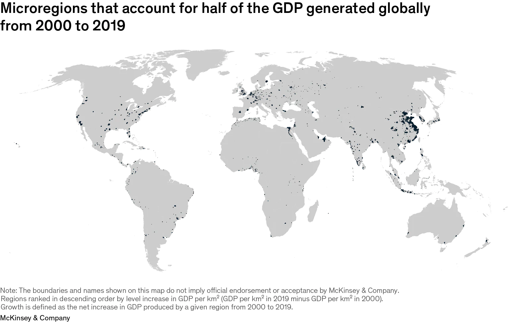
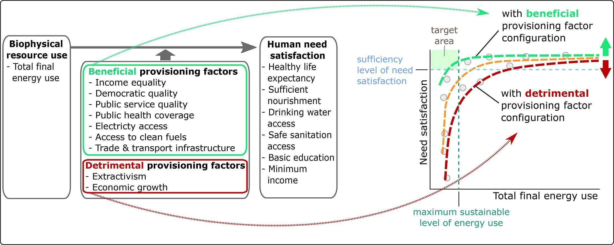

7 Development Economics
The primary task of economic development is to bring people out of poverty. (And when that is done, what should development be?)
Progress is the increase of options (Noah Smith)
“Development” (growing bio-economic pressure) amounts to increasing the total energy throughput of the economy while decreasing the amount of human activity allotted to the productive sector. (Giampietro/Fix)
Trainer
Thinking about development is dominated by a conventional conception which takes for granted the centrality of increasing production for sale, integration into the globalized market place, moving to more sophisticated technologies, and the goal of rising to affluent rich-world living standards. Basic criticisms of this conception of development are briefly summarized, firstly to do with the way it has primarily benefitted the rich and secondly regarding its grossly unsustainable resource implications. Global biophysical resource endowments prohibit its realization. There has been remarkably little thinking from conventional or critical sources on the goals and means which a sustainable alternative must take. The Simpler Way project is concerned to show the necessity for, and desirability and workability of, the development of mostly small scale, cooperative, highly self-sufficient and self- governing local economies focused on meeting basic needs, and not concerned with economic growth, globalization, competing in the global market place, or aspiring to rich-world “living standards”. It is argued that only some form of Simpler Way can enable satisfactory global development within sustainable resource and ecological limits.
The major fault in most if not all previous development thinking has been failure to grasp the need for materially simple lifestyles and systems.
Conventional development can be regarded as a form of legitimized plunder.
Alternative, appropriate development … The simpler way
The basic element in appropriate development is the small, highly self-sufficient and largely co-operative local economy.
The transition can be a process of gradually building a new “Needs-Driven-Economy” underneath the old “Profit-Driven-Economy”. It can begin by a few coming together as a Community Development Cooperative to organize the provision of some neglected basic goods and services, for example by setting up community gardens, poultry co-ops or aged care rosters. Their long term goal would be to increase these cooperative, socially desirable non-market activities until they might largely replace the old economy.
Trainer (2021) Third World Development RWER 95 (pdf)
The Failure of Neoliberal Development Policy
Until the mid-1970s, development economics was based on the notion that a middle-income country is a country with the same type of economic struc- ture—a large manufacturing sector—as a rich country. It was understood that for a variety of reasons—among them market size, technological sophistica- tion, relatively high price of capital relative to labour, etc.—the industrial sector of a poor country would need a lot of time before it would be strong enough to face competition from wealthier countries. Th is period of ‘infant industry protection’—as John Stuart Mill called it—is comparable to the many years amazon.com operated its business with great losses. Slowly industrializing a nation represents the same kind of trade-off between present costs and greater returns (e.g. wages) in the future. In the meantime the poor country would earn scarce foreign exchange from the export of commodities. For developing countries, customs duties tend to provide a large share of government revenue, and because ports were relatively easy to control, even weak governments could easily secure this revenue (e.g. compared to a value added tax).
As already alluded to, if China and India are separated from the rest of the developing world the development record over the last 35 years has been poor in most developing countries. China and India have based their national development on continuing their industrialization eff orts 5 started around 1950 (Nayyar 2007). In no way can these countries be considered showcases of the neoliberal policies propagated by the Washington Consensus. On the con- trary, they followed the policy advice of Friedrich List (1841) that industrialized Continental Europe and the United States: industrializing and then slowly ‘opening up’ borders. China and India may have allowed too little competition for too long, and may have opened up late, but these are small mistakes com- pared to the policy errors of the Washington Consensus responsible for the deindustrialization of so many developing countries in the periphery.
The term creative destruction, inspired by Joseph Schumpeter, has grown increasingly popular, and is sometimes used to justify all kinds of changes. However, destruction and creativity may take place in diff erent parts of the globe, as when the textile mills of Manchester replaced the weavers of Bengal during the fi rst Industrial Revolution. Th is paper argues that trade liberalization divided the Th ird World into two groups: (1) those—like India and China—that pursued industrialization for more than 50 years and benefi ted from access to the world market, and (2) those countries where industrialization was too weak to survive, the synergies of industrialization were put in reverse, and the economies deindustrialized and thus became primitivized.
To make a comparison appealing to the readers’ intuition: it is much better to be a medio- cre lawyer than to be the world’s most effi cient cotton-picker. Th is is the principle upon which all successful industrial policy has been built from Henry VII came to power in England in 1485 until the post-WW II Marshall Plan in Europe. It has been articulated by classical development economics, but undermined by the Washington Consensus. Th e rest of this section shows the mechanisms with which the Washington Consensus policies have primitivized the periphery
The dismal performance of neoliberal development poli- cies that came into eff ect starting in the late 1970s, when debt crises in the Th ird World forced Th ird World countries to open up abruptly. Deindustrial- ization was the price paid for being saved by the IMF and the World Bank.
In many ways, the United States can be seen as the prototype successful develop- mental state. Aft er US independence, the Continental European understanding of development as synergies among a large number of increasing returns indus- tries was retrieved from European literature and rediscovered by US economists. Th ese economists insisted that the United States, in spite of its abundance of natural resources and obvious comparative advantage in agriculture, would grow poor without manufacturing industry.
Later, along the same lines of reasoning, Henry Carey (1793– 1879) insisted that trading too much with Britain would preclude the United States from enjoying the bounties of future technological change.
Huge subsidies in the form of cash transfers have saved the fi nancial cores of capitalism against their own mistakes. Now, it is time to save the true victims of the market—the world’s poor—from the same type of mistakes, imposed on them by others.
We mentioned the French Revolution and the late 1840s as two periods when views of the market as harmony-ensuring swift ly shift ed to acknowl- edge that markets are potentially chaos producing. However, with the theories of David Ricardo, the illusions of trade as a harmony-producing machinery came back. 1846 saw the repeal of the Corn Laws and the peak of infl uence of Ricardo’s economic theory. A deep fi nancial crisis in 1847 marked a turning point, followed in 1848 by revolutions in all large European countries with the exception of England and Russia.
1848 produced three important books all critical of the economic order legitimized by Ricardian economics: Karl Marx and Friedrich Engels’ Com- munist Manifesto (Marx was so radical that he was forced to fl ee Germany for England), Bruno Hildebrand’s National Economics in the Present and in the Future (Hildebrand was a liberal who had to fl ee Germany for Switzer- land in order to escape the death penalty 8 ) and John Stuart Mill’s Principles of Political Economy. From completely diff erent political angles, all three books attacked the mainstream economics of the day for suff ering from the same weaknesses of which we accuse today’s mainstream. By attempting to make economics a much more accurate science than it merits, mainstream economics has created economic disasters: both fi nancial crisis and pov- erty in the periphery. All three 1848 books understood that national wealth required industrialization, recanting Ricardo’s trade theory, the very same theory which at present—in its most simplistic form—provides the basis of the world economic order that locks poor nations into a comparative advantage of being poor.
Table: The coming shift in economic focus: Before and After the 1848 moment
| Pre-Financial Crisis Focus | Post-Financial Crisis Focus |
|---|---|
| Capital | Technology and entrepreneurship |
| Financial economy | Real economy |
| International trade | National production |
| Economic models | Economic facts and their contexts |
| Distribute capital (‘aid’) to eradicate poverty | Distribute production to eradicate poverty |
| Perfect competition | Poverty eradication needs high wages and capital formation that only dynamic imperfect competition creates |
| Economics strongly ideologically biased. The Washington Consensus maintained markets are good and the state is bad | Separation of analysis and ideology, ‘technocratic’ analysis |
| Economic activities qualitatively alike | Economic activities qualitatively different |
| Gross national product per capita | Real wages |
| Economics as a science defined by the use of certain tools | Economists’ toolbox extended to any relevant approach |
| The market as an ideological goal | The market as a tool for wealth creation |
The one single message in this paper is that the only way to create middle- income countries is to create countries with a large division of labour in increasing returns sectors—countries with a manufacturing sector (and advanced services). Diversifi cation away from the primary sector and the cre- ation of employment must be given priority before free trade. Th is has been the basis of all successful developmental practice since the late 1400s and of development theory since 1613. At times, this principle gets suppressed by excessively abstract economic theories—at the time of the French Revolution, n the 1840s and since the late 1970s—but empirically-based theories eventu- ally come back, resurrected by economic crises. The nexus that always gets rediscovered is the apparently paradoxical but crucial connection between manufacturing and wealth: that building a non-agricultural sector is the best way to eradicate poverty and famine.
Th e 1948 Havana Charter—approved by all members of the United Nations at the time—was based on the principles of John Stuart Mill and of the Mar- shall Plan. A blueprint for the development of peripheral economies exists in the Havana Charter, and a key factor is the timing of free trade.
Policies that create and nurture increasing returns’ sectors in poor countries are needed, and discussion of how and when to turn on and off will be as heated as it has always been. When successfully promoted—as in the United States—protec- tion carries the seed of its own destruction: having achieved a certain size and skill level, protected companies themselves seek larger markets and freer trade in order to stay competitive. History does not supply easy formulas, but at least shows us some very important principles that have been ignored far too long due to the Washington Consensus.
Reinert (2011) The terrible simplifiers (pdf)
7.1 Death of Global Development
David Oks and Henry Williams
Early in the third decade of the twenty-first century, that once-hegemonic view of global development seems to have lost its coherence. The Covid pandemic, supply chain emergencies, agricultural shortages, the war in Ukraine, the emergence of global inflation and energy shocks, monetary tightening in the West, the specter of global recession—all of these have scrambled the optimism of the 2000s and 2010s. Fiscal insolvency has become a live possibility for countless poor governments, and many years’ worth of gains in income have been erased. The World Bank announced in October 2022 that progress in reducing extreme poverty had ground to a halt, with the prognosis for the next few years uncertain. The events of the last two years, the Bank’s president said, had conspired to “throw development into crisis.”
We aim to show why the prognosis for the poor world is much worse than the standard picture—preoccupied with a purely quantitative account, however rigorous, and ignorant of more geographic, historical, and political-economic approaches—has allowed; to explicate the structural changes that have undergirded the perverse trajectory of global development; and to outline a more realistic outlook, married to a new framework, for a return to real development.
The crux of the problem is this: despite attempts to find alternative models of economic development, there is no widely replicable strategy to develop a country—simply put, to turn it from poor to rich—that does not involve an economy becoming highly industrialized. But in recent decades, the growth of manufacturing sectors, and thus of economic development more broadly, has been overwhelmingly concentrated in East Asia, particularly in China. Across the bulk of the poor world—here we have in mind Latin America, South Asia, the Middle East, and sub-Saharan Africa—economies have been experiencing a more disturbing trajectory: simultaneous deagrarianization and deindustrialization, especially in the years after 1980.
The result is that industrialization, development, and massive income growth in East Asia has statistically “compensated” for stagnation almost everywhere else—with East Asian industrialization partly responsible for the loss of other countries’ manufacturing bases. This has been the case even as incomes have risen in most of the poor world, mainly on account of the 2000–15 commodity supercycle driven in part by the explosive growth in demand from the Chinese market—which, ironically, helped lock emerging markets into low-tech, undiversified export profiles. Asian success, in short, has obscured a bleaker picture in the rest of the world.
Most emerging markets have not found an engine of durable growth comparable to manufacturing—most have indeed grown over the last few decades, but dependence on services and commodities exports has not made them rich. Thus most “developing” countries—we are skeptical of that euphemistic label—are in a worse structural position than they were a few decades ago: less economically complex and more socially unstable, with their developmental coalitions, if they ever existed, badly frayed. For all the intermittent hype around “rising India” or “rising Africa,” systemic dynamics—deindustrialization, ecological disruption, demographic headwinds—will pose severe challenges to economic development over the coming decades. New waves of industrialization and meaningful development are unlikely in these parts of the world. From the perspective of poverty statistics, Africa will assume particular importance: by far the continent with the worst economic performance over the last several decades, it is there that the most significant population growth will occur over the next century. The result, pending dramatic change, is a world in which the progress made against poverty over the last forty years will slow, stagnate, or even reverse.
For most of the world, there is no real path to development that does not run through manufacturing.
Appropriately, then, it was the part of the world that has seen the most industrialization in the last fifty years, East Asia, that has also contributed by far the most to global economic development. For all the optimism around “global” poverty reduction in the twenty-first century, in fact, it is striking how much progress has come from a single powerhouse—the People’s Republic of China. In the decades since 1980, it has been there, and in smaller East Asian economies like South Korea, Taiwan, Singapore, and Hong Kong, that the lion’s share of actual economic development and poverty reduction has occurred.
China’s gains have contributed about 45 percent of the total reduction in the “extreme poverty” metric since 1981.
The positive outliers for truly strong growth in median incomes can be found in Southeast Asia, especially Vietnam and Indonesia. Vietnam’s growth is particularly strong thanks to its own manufacturing miracle, and comes close to that in China.
Income growth in the poor world outside of China appears weaker still when one considers how much was the result of the 2000–15 commodities boom—and thus, indirectly, of Chinese growth. Hot commodities markets in those years allowed Latin American, Southeast Asian, and some African nations to increase incomes and reduce poverty. But those income gains, dependent as they were on the knock-on effects of Chinese growth, masked a more disturbing trend: the structural weakening of these countries’ development potential. Incomes are higher and poverty is lower today than in the past. But the type of development takeoff seen in China is more out of reach for poor countries now than it was a few decades ago.
Between 1979 and 1982, the average price for lumber fell by 40 percent, copper by 25 percent, coffee by more than 20 percent, and sugar by about 10 percent. But the pain in the poor world was arguably much greater. The booming commodity cycle met its chaotic death, and dozens of economies screeched to a halt; expansionary fiscal programs that had been built on the assumption of strong growth soon found themselves in crisis, while higher borrowing rates significantly increased the cost of servicing dollar-denominated debts. Brazil is paradigmatic: while from 1960 to 1980 real per capita GDP increased by more than 140 percent, from 1980 to 2000 it grew by less than 20 percent. Similar decelerations, recessions, or depressions occurred all over the poor world, leaving lasting damage.
The twenty years that the Volcker shock inaugurated can be summarized as two lost decades for development, with incessant crisis replacing stable growth. Across the poor world, deep recessions led to fiscal insolvency, social and political collapse, and massive bloodletting.
Most poor states emerged from those two decades severely weakened. The bold national developmentalism of earlier decades, whether anticolonial, as with Sukarno, or Western-aligned, as with Houphouët-Boigny, had been discredited by economic contraction and declining living standards. Expansionary fiscal regimes were withdrawn, and internal conflicts moved the foci of government activity elsewhere. The “structural adjustment” programs that the IMF required for debt relief, or which were advocated independently by enthusiastic liberalizers like Hernando de Soto, further diminished state capacity through privatizations, deregulation, and government layoffs. In desperation, many poor-world governments began to liberalize their capital accounts in order to spur foreign investment, increasing volatility and culminating in a series of financial crises—in Mexico in 1994, in various Asian economies in 1997, and in Russia in 1998. Yet all these “reforms,” despite the support they received from Western economists or foreign acolytes like de Soto or Anatoly Chubais, did little to improve growth fundamentals. Instead, they gave the poor world the hollowed-out states with which they would enter the new century. Many public sectors had been so desiccated by the chaos that they were simply unable to manage the societies over which they presided; in the worst-hit places—like Somalia, where state collapse in the 1990s led to the return of customary law—what little remained can be termed, in the words of the Nigerien historian Rahmane Idrissa, “government by means of the aid industry,” with exenterated states surrendering core governmental functions to the organs of the international humanitarian complex.
However horrific these crises were, the central structural transformation of the 1980–2000 period would ultimately be of a deeper and more damaging nature: the unexpected arrival of deindustrialization in the poor world. The successive waves of deindustrialization that swept the world after the 1970s crashed most famously on Western shores, in the Rust Belt of the United States, in northern England and Scotland, and in northern France. But deindustrialization was a global phenomenon, touching nearly every economy on earth. In fact, after 1980, poor countries suffered a process of relative deindustrialization just as intense as that experienced in more advanced economies—and often more so—due to the same primary cause: the emergence of the Chinese industrial behemoth, which displaced Mexican and Iranian workers as fiercely as it did American or French ones.
In the Western countries, deindustrialization could at least be slotted into a convenient narrative of evolution into affluence—a necessary part of transitioning to a higher stage of development, in which skilled, cosmopolitan “knowledge workers” would populate a comfortable “mature economy.” But no such narrative could be furnished for places like Brazil or India, where deindustrialization coexisted with a still overwhelming degree of backwardness and poverty. As it left the poor world, industrialization’s historical task was still undone.
At the same time, another structural change began to make itself felt: an accelerating process of deagrarianization in the years after 1980.
The increased capital intensity of post–Green Revolution farming—demanding inputs like artificial fertilizer that many could not afford—put particular pressure on many small-time agriculturalists. Around the same time, increased exposure of national agricultural economies to global markets led to a rewiring of poor-world agriculture toward specialization, with self-sufficient national agricultures challenged by a new emphasis on the comparative advantage in cash crops. The withdrawal of state agricultural subsidies and tariffs during the crises of the 1980–2000 period added further strain, as did desertification and soil degradation due to poor land management in places like Southeast Africa and Haiti. These trends placed ever-greater pressure on small farmers. Many were forced to go into insurmountable debt, leading to an epidemic of suicide among Indian farmers; others had to take seasonal jobs in cities to supplement their incomes from farming. The ultimate result was an accelerated process of deagrarianization and mass migration into urban centers. With rural migrants flooding in as national populations boomed, the cities of the poor world grew massively during the post-1970 period. Almost all of this growth, however, was concentrated in ever-growing slum belts around urban peripheries.
Simultaneous deagrarianization and deindustrialization left a void in poor-world economies - economies trapped between commodity-export dependence on the one side and low-skill service work on the other.
With industry and agriculture both in relative decline, many postindustrial economies reverted into raw commodity exports, especially after global commodity demand began to pick up again in the mid-1990s with the Chinese takeoff. A speedy decomplexification [occured], with extractive rentierism becoming increasingly central.
Because of Chinese growth, resource exporters in Latin America, like Ecuador, Bolivia, or Brazil, were able to support “Pink Tide” governments marrying resource extraction and economic redistribution, significantly reducing poverty and building out basic infrastructure.
When the commodity cycle turned—as it did in 2014–15, with Chinese growth slowing and oil prices tumbling as American fracking surged—the extractive model proved its fragility, with economic crises leading to a wave of global political instability.
Surplus labor was absorbed into a nebulous economic stratum which economists categorize, quite euphemistically, as part of the “service sector.” In the public imagination, the standard archetypes of these service workers are the call-center workers and IT professionals of Bangalore or Manila. It is this variety of outsourced, globalized labor that led some economists to optimistically sketch a “services-led development” model for countries like India in the 1990s and 2000s. But far more common than this relatively skilled labor pool is a different, more plebeian variety: the low-productivity work, overwhelmingly informal, casual, and irregular, that has come to define the social landscapes of poor-world cities -this informal work is effectively a dead end for surplus workers. The casual work ubiquitous in the poor world does not represent a cure to mass unemployment, but instead a mass underemployment.
Thrown off by agriculture and industry, never fully occupied by service work, the economic problem of superfluous labor soon becomes a social one. Unoccupied and discontented, these men are the ideal destabilizers of Third World societies.
The main “release valve” for the worsening economic situations of poor countries has been migration to better shores. As expatriate workers went abroad for higher wages, the remittances they sent back home became lifelines for entire economies.
The global economic situation has changed: the classic “flying geese” model of industrialization, which posits that manufacturing will spread to any labor-abundant economy where goods can be made more cheaply—implying an international “queue” for industrialization—may no longer hold. Each wave of industrialization has been weaker than the last: possible factors include heightened global competition, with contemporary countries having less control over their home markets than did successful industrializers.
But poor societies today are also quite different from previous late industrializers. South Korea in 1960 or China in 1980 were largely agrarian societies, with vast peasantries (“full of potential energy, waiting to be released,” as Perry Anderson has written) under uncontested rule by flawed but coherent coalitions of developmental elites. Their initial success was a product of high state capacity even at low levels of income. That the East Asian industrializers were able to sustain this success even as conditions changed, with the tactics of their industrial policies shifting—a change not seen in Latin America when import-substitution began to falter—reflects highly pragmatic and strategic developmental coalitions.
Can these conditions be replicated in the poor world today? Ultimately this is a question not just of economics, but of political economy: whether countries can replicate the elite coalitions seen in cases of rapid movement into high-income status—coalitions that can negotiate the sort of intertemporal bargains needed to make necessary investments, and thus sacrifices, for durable economic development. The challenge, for these relative success stories, or potential future ones like Bangladesh, is not necessarily impoverishment, but the middle-income trap associated with once-thriving economies like Argentina or Turkey. Long sojourns in the middle-income trap have led to the entrenchment of large firms or elite groups oriented around unproductive rent-seeking—actors with little real interest in development.
Their states no longer show much autonomy from these rentier elites, and little power over them regardless. Their economic trajectories converge on what Alex Hochuli has called “Brazilianization,” a state of being “modern but not modern enough”: relative stagnation at a middling level of income, with rising informality, rentierism, and inequality, a decomplexifying economy dependent on commodities, and an elite increasingly sequestered away from its own population.
This picture is darkened further by evidence of weakening state capacity and, in many places, a faltering state monopoly on violence. Most poor countries have shown no ability to challenge growing crime and violence.
Slum societies, deprived of the social self-regulation provided by traditional communities, often prove ungovernable in a way that peasant societies were not. The degradation of social order and state legitimacy over the last decades in these societies is obvious to any observer.
In their gradual loss of state capacity, these states have not been aided by a consensus among Western development experts that, in the historian Idrissa’s words, asks “not about how to strengthen the state, but how to further debilitate it,” and which focuses inordinately on small-scale interventions—like randomized controlled trials (RCTs) that can be carried out by nongovernmental organizations and academic research teams—rather than more challenging and locally sensitive questions of elite coordination and political economy.
Instability, violence, and the loss of state capacity can poison even the most hopeful attempts at development.
Iin the coming decades, two headwinds—the first ecological, the second demographic—are likely to worsen the outlook for global development further.
Stagnant development in most of the poor world, ecological crisis, declining populations in the developed world, and growing populations in the worst-off places—what will this explosive mixture yield? Likely is an ever-growing phenomenon of mass migration, with the various immigration crises of the 2010s, and the attendant political backlashes to them, only presaging what is to come. This future is one of barbed wire, border fences, and migrant detention facilities.
There is simply no way to reduce the massive demand for migration opportunities without a return to real global development. But even successful population transfers—which will occur, in one way or another—will only partially compensate for the failure of the global economic system to meaningfully develop the poorest parts of the world.
What then, given the concurrent necessity and impossibility of industrialization in the poor world, particularly in Africa? The reality is that Western elites do not have an answer. The intellectual exhaustion of the elite “development community” is hard to fathom. In its upper echelons, those who still believe in the hoary orthodoxies of past decades—free trade, democratization, the extraordinary importance of what are nebulously referred to as “inclusive institutions”—coexist uneasily with more humble types who will admit, in private, that they have no real answer at all.
A new framework for development—ambitious and visionary on the one hand, but realistically grounded on the other—is direly needed, with a scope including both the poor world and the rich. This will require much work at national levels in poor countries. At a minimum, it will necessitate the displacement of extractive rentiers by new coalitions of development-oriented elites; conscious attempts to rebuild state capacity and reduce the outsourcing of governance to foreign institutions; land reform and agricultural modernization with an eye toward self-sufficiency in food; and the reestablishment of order, by improving damaged social fabrics and restoring state monopolies on violence, perhaps through symbolic national refoundings. ignificant improvement of international transit infrastructure to address geographic hurdles; the improvement of bureaucratic capabilities, which will demand not only organizational reform but also deliberate cultural reformations; mass health and education programs, similar to those that made the Chinese labor pool so potent at the dawn of its industrialization; and the pursuit of conscious and focused industrial policies that improve on past approaches, from multilateral collaborations (perhaps an OPEC for rare earth metals) to the use of resource leverage to industrialize up the value chain, as with Indonesia’s stipulation that all nickel exports be processed within the country—all these will be needed too. Certainly, such an agenda would be ambitious; it would require at least a spurning of many Western development experts, and perhaps even a strategic withdrawal from parts of the global system. But however demanding it may seem, it is fundamentally similar to the programs pursued by the great modernizers of the past—from Muhammad Ali Pasha or Bismarck in the nineteenth century to Atatürk and Deng Xiaoping in the twentieth.
Yet even these changes will come to nothing if they occur within the current world order: the core must change, and not just the periphery.
As crisis adds to crisis, a new golden age of global development seems like a distant prospect. The requisite structural reforms, national and international, may bend the existing arrangements to the point of breaking, and thus prove uncompelling to the wardens of our fissured earth—more comfortable wandering from crisis to crisis, dispensing short-term curatives to prevent the bottom from falling out. If it represents something fanciful and “unrealistic,” seeking to redeem a grim assessment of the global situation by grafting a flight of hope onto its tail, then perhaps this is necessary: taking a purely realistic view of the situation, like gazing into the eyes of the Medusa, would simply turn us to stone.
Oks (2023) The Long, Slow Death of Global Development (pdf)
Noah Smithon Oks and Williams
It seems extremely clear to me, witnessing the abundance of success stories, that global development has not been dying any sort of death — long, slow, or otherwise.
The Oks & Williams article has a tendency to skip back and forth between some of these different questions, so that despite the authors’ good-faith attempts to weave disparate points into a cohesive thesis, it can be difficult to isolate what their theses are. But basically, I think they’re making three claims:
They’re telling a story about the history of development, arguing that 1950-1980 was the peak, and recent decades have been much worse.
They’re offering a theory about the mechanisms of development, arguing that industrialization is no longer a viable path for poor countries.
They’re making a prediction about the future of development, arguing that there are significant headwinds that will slow poor countries’ growth.
Any account that claims that development has been dying a long, slow death needs to come to grips with the fact that poor-country catch-up growth was basically nonexistent in the postwar decades, but has been a fact of life in the 21st century so far. This accelerating poor-country growth was accompanied by massive poverty reduction.
Oks and Williams are on very shaky ground when they claim that the postwar decades were the golden era of global development. If global development has ever had any sort of a golden age, it has been the last three decades, not the postwar years.
As I see it, development was always very difficult, unreliable, and uneven. But it has been a little less difficult, unreliable, and uneven in recent decades than it ever was before. Development’s story has not been that of a fall from grace, but of a slow, fitful acceleration.
Automation — represented by rapid total factor productivity growth in manufacturing — actually helps poor countries industrialize, even though it does the opposite for rich countries.
It might be that the world can’t all industrialize at the same time — that some countries naturally tend to specialize in being natural resource exporters, selling energy and minerals and food to everyone else, even as some other countries join the ranks of the manufacturers. This is, in fact, the upshot of the economic geography model of Krugman, Fujita and Venables, when applied to global trade networks and global development. In that model, global regions industrialize one after another, with a shrinking “periphery” region selling natural resources to the rest.
Now that China’s industrialization is slowing down, other regions could get their chance.
Another potential big factor that Oks and Williams don’t discuss, which is decoupling. The IMF is worried that an economic rift between China and the developed democracies will make it harder for poor countries to sell their products, because they’ll have to choose one market or the other.
The proper perspective here, I think, is to realize that economic development was always hard, and always slow, and always uneven and uncertain.
Noah Smith (2023) Economic development is doing OK
Ken Opalo on Oks and Williams
It’s true that the field of international development is not working as it ought to. Too much time and resources get wasted on faddist navel-gazing instead of serious investments in knowledge production and policy focus on structural change. Policymakers in donor agencies and developing countries are too easily distracted by the next shiny thing (including ill-suited claims of rigor). Due to the over-reliance on “apolitical” foreign expertise with no skin in the game, much of development thinking ends up erroneously assuming that poor countries are poor because their policymakers/politicians are dumb/autocratic/corrupt. Consequently, many low-hanging potential wins get neglected simply because they are boring or don’t fit within the orthodoxy espoused by experts.
That said, it is simply not true that there’s been nothing but four decades of stagnation or decline in developing countries as alleged by Oks and Williams. Just because structural economic change doesn’t get much airtime in Western academic/practitioner circles does not mean that it is not happening. The last 30 years have seen significant improvements in the developmental outcomes in many low-income countries, including in Africa. From infrastructure, to education attainment, to life expectancy, the last three decades have witnessed real economic change in most African states.
Before the disruptions caused by the Covid-19 pandemic, Africa as a region clocked 25 years of uninterrupted economic growth.
I emphasize these facts because it is absolutely important that African policymakers internalize the right lessons from the region’s economic history over the last 60 years. As Thandika Mkandawire and Morten Jerven remind us, the narratives we tell ourselves about economic history matter. A sweeping dismissal of the gains of the last four decades is a recipe for failing to appreciate the region’s economic successes and to build upon them. Indeed, it is the failure to learn the right lessons from economic history that fuels the intellectually anemic and inherently whimsical approach to international development that the authors rightly critique in their piece. The idea of perpetual stagnation in Africa (and elsewhere in the developing world) is a myth that needs to be put to rest.
The (relatively) high population growth rates in African countries have masked the impressive growth rates between 1960-1980 and 1995-present.
The crises over the long decade between 1980-1995 were especially destructive was because they could not have come at a worse time. African countries were barely 20 years old, and still very much trying to figure themselves out. 40 years later, things are different.
While weak states still dot the region and nearly all states struggle to project power throughout their territories, it is also true that the typical African state is a lot more consolidated today than it was in 1980. That counts for something. More importantly, it means that the past will not be that good of a guide on how African states will respond to current and future crises.
Transformational economic growth and development are possible in Africa. Contrary to popular belief, the crises between 1980-1995 are not the definitive elements of the region’s economic history. There was real growth before (1960-1980) and after (1995-present) that produced tangible developmental outcomes. A narrative of stagnation simply does not match the facts. In the same vein, highlighting the blindspots of global development need not lead to unnecessary catastrophizing about Africa’s future economic prospects.
7.2 Globalization
Reinert
US historian Richard Goldthwaite shows the historical importance of the dichotomy between raw materials and manufacturing in a recent book: what is generally seen as Europe’s ‘commercial revolution’, Goldthwaite argues, was in fact a process of import substitution—manufactured goods, that had previ- ously been imported in the Levant, started to be produced in Europe from the 12th century onwards (Goldthwaite 2009, 6–8). I shall argue that this extremely important distinction—between raw materials subject to diminishing returns, monoculture and perfect competition on the one hand, and manu- factured goods subject to increasing returns and a large division of labour on the other—was lost in the post-WW II period. Only nations that contin- ued their industrialization strategies—like India and China, starting from the late 1940s—have been successful during the latest process of globalization. If India and China are removed from the sample, globalization is a shambles, even more so in terms of real wages than in terms of GDP per capita (because wages as a percentage of GDP have been reduced across the board).
Reinert (2011) The terrible simplifiers (pdf)](pdf/Reinert_2011_The_terrible_simplifiers.pdf)
Roberts
‘Globalisation’ of trade and finance over the last 40 years under the hegemony of the US is over.

The general rate of profit was 19.3% in the ‘golden age’ of US supremacy in the 1950s and 1960s; but then fell to an average 15.4% in the 1970s; the neoliberal recovery (coinciding with a new globalisation wave), pushed that rate back up to 16.2% in the 1990s. But in the two decades of this century the average rate dropped to just 14.3% – an historic low. The US economic base has been seriously debilitated. Now there is what is described as ‘geopolitical fragmentation’ ie the rise of alternative blocs attempting to break with the imperialist bloc led by the US. Capitalism is fragmenting as it is inherently incapable of international unity and global planning.
7.3 Structural Reforms
Braun on Draghi’s ‘Refrorm Thesis’
Draghi was a structural reformer avant la lettre: He uses the term “reform” exactly as it would come to be used in “structural reforms”. Except that the concept didn’t exist at the time.
Draghi’s thesis fully articulates the theory that came to bring us structural reforms: A planner opting for short-run stimulus will never reach the optimal long-run path. By contrast, enforcing optimum long-run policies today will not have negative short-run consequences.
Noting that “the common finding is a positive relationship between real wages and employment”, Draghi seeks to refute that finding, describing it an artifact of faulty methodological choices.
Structural reformers must reject the idea of a positive wage-employment relationship because SRs are supposed to boost employment precisely via lower real wages.
Braun - Twitter Thread on Mario Draghi’s Thesis
Tooze on Draghi/Yellen new assignments
It would be absurd to blame either Draghi or Yellen personally for the sequence of shifts and shocks that has destabilized capitalist democracies since the 1990s or the crisis of confidence these have triggered among centrist liberals. But as people of huge influence and as representatives of a class of experts who have ruled the roost for the last 30 years, they can hardly plead innocence either. It was on their watch that growth slowed, inequality between social classes and regions became ever deeper, and the risk of inflation tipped into that of deflation. It was on their watch that the financial system was allowed to become a flywheel of mass destruction. It was on their watch that the risks of climate change and pandemic threats went unaddressed.
If broad-based growth cannot be restarted, the implications are alarming.
Whereas the market revolutionaries of the 1970s and ’80s were radicals, squashing the last bastions of the old left and bulldozing organized labor out of the way, Draghi and Yellen came to the fore in the 1990s as managers of what is now known as the Great Moderation.
Inheritors of the market revolution, committed to managing and improving the status quo, Draghi’s and Yellen’s march through the institutions has been glorious, but their careers have also been defined by constant adjustment to political and economic shocks that they did not foresee and could not control. These shocks have driven Yellen and Draghi to explore the political and economic boundaries of technocratic power.
At MIT and Yale in the 1970s, they imbibed what was known as the neoclassical synthesis. The central idea was that though the microeconomics of markets were important, markets would function properly only so long as the macroeconomic environment was set correctly. Keynesianism and market economics were not opposites but complements.
In the 1980s, Yellen played an important part in shaping the further development of the neoclassical synthesis known as New Keynesian economics. Working alongside the likes of Joseph Stiglitz and George Akerlof, she mapped how labor market imperfections could give rise to macroeconomic problems. Those rigidities in wages and prices, in turn, also enabled macroeconomic policy to work. It was because markets were slow to adjust that unexpected movements in interest rates, taxes, and government spending could have real effects.
Draghi’s work at MIT was less intellectually generative than Yellen’s. But his dissertation is nevertheless revealing. It includes a chapter in which he describes how planners trying to manage an economy subject to short-run fluctuation are more successful if they focus on long-run goals. Long-range strategy, regardless of short-term cost, will do better than a hectic effort to optimize at every moment.
Though they owe little to the Chicago school, it does not follow that Draghi and Yellen were not exponents of neoliberalism. On the contrary: They were strong advocates of markets. Competition and properly designed incentives were the recipe for productivity and growth.
In the world economy, they favored the free capital movement and flexible exchange rates that defined the so-called Washington Consensus of the 1990s. It was Rudiger Dornbusch, the pope of international macroeconomics at MIT and one of Draghi’s chief mentors, who described the project of his generation as being the taming of “democratic money.” In the wake of the collapse of the Bretton Woods financial order and the U.S. dollar’s gold peg, the chief enemies of good economic governance were shortsighted trade unions pushing for higher wages and vote-chasing politicians. Once trade unions were curbed and politicians confined to their proper tasks, Friedmanite monetarists hoped that prices could be stabilized by mechanical monetary rules.
But by the early 1980s, that had proved naive. For the MIT crowd, what keeping money safe from democracy amounted to was placing it under the control of competent experts credibly committed to providing markets with the stable framework they needed. The independent central bank was their institutional bastion.
The global financial order developed by economic elites—from the 19th-century gold standard to the gold-pegged dollar of the Bretton Woods system to the worldwide preoccupation with independent central banks after Bretton Woods dissolved—has always involved imposing constraints on policymakers. In the 1980s, devices such as exchange rate pegs were all the rage in Asia as well as Europe for signaling self-discipline to financial markets.
For all their inside status and expertise, neither Yellen nor Draghi gave any public sign of anticipating the crisis that was to come. The same was true for the vast majority of their cohort, whether MIT or Chicago. The scale of the systemic risk posed by the financial system of the advanced economies simply did not register until it was too late.
The consistent failure to deliver adequate fiscal policy responses to the crisis after 2008 went against all the preconceptions of 1970s MIT-style macroeconomics.
Where were the spendthrift politicians when you needed them? The fiscal undershoot by the Obama administration could perhaps be explained by miscalculation and Republican partisanship. But the fact that a centrist majority in the heart of Europe, faced with dangerous populist challenges from the left and right, would choose to die on the hill of budget balance was not part of the plan.
It was up to the ECB to act. In 2015, to the horror of German conservatives, Draghi finally launched a QE program. This was a technical economic measure. But it had spectacular political effects. It enabled the European Council to play hardball with the radical left-wing government in Greece without causing the bond markets to panic. One might say it marked the Americanization of the ECB.
Seven years on from the collapse of Lehman Brothers, a majority on the Fed board was swinging toward tightening. The point was not so much that the U.S. economy needed restraining as that they were deeply uncomfortable with interest rates remaining at zero. It stoked speculation in financial markets and gave the Fed nowhere to go if it needed to counter a downturn. Negative interest rates along the lines adopted by Japan were not something that the Fed wanted to contemplate.
The basic framework of 1970s macroeconomics that framed Draghi and Yellen’s training and outlook, like that of the rest of their cohort, was that properly structured markets would take care of growth. Well-regulated financial systems were stable. The chief priority for economists was to educate and restrain politicians to ensure that inflation remained in check and public debts were sustainable.
Financial instability is a mortal risk. For now, it is being held at bay. But the world saw as recently as March 2020 how rapidly even the largest financial market—the market for U.S. Treasurys—can be destabilized. To tame that risk, the Fed and the ECB, under Yellen’s and Draghi’s non-economist successors—Jerome Powell and Christine Lagarde, respectively—have adopted an astonishingly undogmatic and expansive approach to stabilization.
The Italian political class is abdicating in favor of a retired, unelected official in his 70s.
Faced with a decisive historical challenge—restarting growth after decades of stagnation—Italy’s political class has chosen to delegate executive power to someone who has never been elected to office. It is the ultimate victory of technocracy but also a do-or-die challenge.
The truly strategic challenge facing progressive politics in the United States as in Europe is to find a new model of inclusive and environmentally sustainable economic growth
In the 1990s, you didn’t need to be a naive exponent of the post-Cold War end-of-history argument to think that the direction of travel for global politics was clear. The future belonged to globalization and more-or-less regulated markets. The pace was set by the United States. That enabled technocratic governments to be organized around a division between immediate action and long-term payoff. That was the trade-off that Draghi evaluated in his MIT Ph.D. in the 1970s. The drama of Draghi and Yellen’s final act is that for both of them, and not just for personal reasons, the trade-off is no longer so clear-cut. If the short-term politics fail, the long-term game may not be winnable at all. “Whatever it takes” has never meant more than it does today.
Tooze (2021) Draghi/Yellen - Can they control what comes next?
7.3.1 Structural Transformation in the Global South
Yadu
There is an increasing realization that the nature and pattern of structural transformation that unfolded in the global North might not be replicable in the global South.
The possibilities of attainment of a North-style structural transformation remains bleak in the contemporary global South. This is majorly because the socio-economic and political context which facilitated the process of structural transformation of the economies in the global North is no longer available to the global South. The process in the North was, to a large extent, fostered by colonialism which allowed these economies to undertake expropriation and extraction of resources, without much concern for ecological limits, as well as to transfer a proportion of their population to the newly found lands in the temperate regions. Given the significant changes in the structure of capitalism now as compared to the earlier phase, it is worthwhile to investigate the possibilities of the global South experiencing the envisaged path of structural transformation.
There is a need to re-examine the narrative of structural transformation as a universal phenomenon which is expected to unfold in a linear way across time and space. The received wisdom in development economics largely neglects the political and historical roots of capitalist development, and remains rather incomprehensive in its understanding of the contemporary nature of transformation taking place in the South due its fixation of gaze from a North-centric lens. Analyzing the particular nature of the processes of development specific to the South brings its own set of challenges that need to be understood in their own subjective context. The way forward is to break away from the North-centric notions of progress and change, and reverse the gaze, to formulate a framework that reflects on the structural conditions and the realities of the global South from their vantage point.
7.4 Industrial Policy
7.4.1 Import Substitution
Irwin Abstract
In the 1950s, many economists believed that import substitution – policies to restrict imports of manufactured goods – was the best trade strategy to promote industrialization and economic growth in developing countries. By the mid-1960s, there was widespread disenchantment with the results of such policies, even among its proponents. This paper traces the rise and fall of import substitution as a development idea. Perhaps surprisingly, early advocates of import substitution were quite cautious in their support for the policy and were also among the first to question it based on evidence derived from country experiences.
Irwin (2020) THE RISE AND FALL OF IMPORT SUBSTITUTION (pdf) (pdf)
Smith on India
Why did import substitution fail? Chang and Studwell’s answer would probably be that making things for the domestic market doesn’t force companies to increase their productivity. It doesn’t help them discover their comparative advantage relative to foreign companies. It doesn’t push them to develop new products. It doesn’t give them much of an incentive, or even much of an opportunity, to absorb foreign technologies. The domestic market is safe, familiar, and uncompetitive, and it’s often possible to dominate it through political cronyism rather than through brutal technological competition.
7.4.2 Export-led Growth
Ha-Joon Chang
Industrial policy can work – sometimes spectacularly well – although it can also fail – sometimes miserably.
Picking on my emphasis on the importance of export performance as a performance indicator, I then talked about the critical importance of export policy, which requires not just free trade but a mixture of free trade, export promotion, and infant industry protection.
The debate, have focused too much on “grand” things like the Big Push, when much of real-life industrial policy has been about “boring” things, like getting the production scale right and providing export marketing services.
Appreciate how critical export is for the success of industrial policy, while [also] appreciate how export success also requires industrial policy.
Ha-Joon Chang (2009) Industrial Policy: Can We Go Beyond an Unproductive Confrontation? (pdf)
Smith on India
India lags in manufacturing but does OK on exports The stereotype of India’s economy is that it relies on services more than on manufacturing. That’s actually pretty accurate; manufacturing is a smaller percent of the economy than Bangladesh or Vietnam, and the trend line is headed in the opposite direction:

But according to what I’ve been calling the “Chang-Studwell” theory of development — based on the book How Asia Works, any of Ha-Joon Chang’s books, and this IMF paper — what matters most is not manufacturing per se, but exports. And I don’t mean “net exports”, i.e. trade surpluses vs. trade deficits — I simply mean the amount of stuff a country sells overseas. The basic idea is that exporting forces companies to raise their productivity levels and learn foreign technologies (by hiring foreigners, by maintaining overseas offices, or just by stealing intellectual property). In this theory, manufacturing is important simply because manufactured goods are easy to export, and because manufacturing industries have opportunities for rapid productivity growth.

And India actually does a pretty good job exporting — about as good as China, and as good or better than China in the 1990s.
Not much labor-intensive manufacturing in exports. Labor-intensive manufacturing is useful for generating employment, for moving poor people from farms to cities, and — at least, if you believe Ha-Joon Chang — for developing a widespread culture of manufacturing.
7.4.3 Service-led development
India’s exports of services are 60% as large as its exports of goods. The thing about services is, we don’t really know how well they contribute to development. Services have only really been exportable en masse for a short amount of time, thanks to the advent of the internet, so there isn’t a long record of countries that exported a bunch of services.
Development runs on agglomeration effects — producers, suppliers, and customers all wanting to locate near each other — and services don’t require nearly the same supply chains that manufacturing does. This means we might expect to see services generate a smaller local multiplier effect (sometimes called an “external multiplier”), leading to less urbanization and product diversification.
Harder to improve productivity in services than in manufacturing.
For service exports that are basically just local services beamed overseas by the magic of the internet — for example, India’s famous call centers — there probably isn’t as much room for rapid technological upgrading.
If you were an electronics maker or a carmaker in Singapore or South Korea or Poland back when those countries were poor, you just didn’t have a huge safe domestic market to hide in. But if you’re an Indian manufacturer right now, even though India is still poor, the domestic market is still so big that there’s less incentive to take the icy plunge into the international waters. If you think this theory is right, then India will need to work especially hard to push its companies to make things for the world instead of just for India.
Fortunately, the Modi administration may have (belatedly) gotten this message. Last year he announced a new slogan: “Make for the world.” Presumably this means a shift from production incentives to export incentives.
7.4.4 FDI Regulation
Chang Abstract
Based on a historical survey of the experiences of the USA, the EU member states and the East Asian economies, the paper argues that during their early stages of development, now- developed countries systematically discriminated between domestic and foreign investors in their industrial policy. They have used a range of instruments to build up national industry. They included: limits on ownership; performance requirements on exports, technology transfer or local procurement; insistence on joint ventures with local firms; and barriers to ‘brownfield investments’ through mergers and acquisitions. On the basis of this, the paper argues that a multilateral investment agreement (MIA) at the WTO, founded on principle of national treatment, is likely to harm the developing countries’ prospects for development. Our historical survey shows that, only when domestic industry has reached a certain level of sophistication, complexity, and competitiveness do the benefits of non-discrimination and liberalisation appear to outweigh the costs. As a result, countries generally move towards a greater degree of non- discrimination and liberalisation as they develop. In that sense, contrary to the claims of the demandeurs of the MIA non-discrimination is better seen as an outcome of development, not a cause
Chang (2003) Regulation of FDI in historical perspective (pdf)
7.4.5 FDI
Smith on Chang/Studwell
At this point, let’s take a moment to talk about why Ha-Joon Chang and some other industrial policy fans think that FDI is not the basis of a sound development strategy. Chang has gone to great lengths to show that today’s rich countries — the U.S., Japan, and so on — restricted or even banned FDI during their early stages of development. But that doesn’t tell us why it’s bad, or even if it’s bad; the rich countries could have succeeded in spite of this policy. Part of Chang’s distaste for FDI comes from the fact that a lot of it is actually just foreign companies acquiring local ones, rather than building new factories; this could result in the foreign companies stunting the growth of the local ones, whereas if they had remained independent they could have risen to become competitors. Also, some FDI goes into real estate, which often just pumps up property values unhelpfully and may set economies up for bubbles and crashes.
But another reason the industrialists are suspicious of FDI is that even “greenfield” FDI — i.e., when a foreign company comes in and builds its own factory in your country — might crowd out domestic companies. If all the good engineers and managers go to work for foreign companies, it could starve local startups of the resources they need to grow. And since foreign companies are likely to reserve the highest-value-added parts of the supply chain (design, high-tech, branding, marketing, etc.) for their home countries, having a manufacturing sector dominated by these multinationals could prevent a company from developing its own globally competitive brands and technologies — like an apprentice whose master will never let him learn his most secret tricks of the trade.
Poland and Malaysia may now be running into this problem.
McKinsey cites Poland’s need to develop or acquire strong brands in order to catch up with West Europe. The failure of Malaysia’s attempt to build domestic champions is worrying.
And yet I see two responses to this. The first is: Do we really care? Poland and Malaysia may not be as rich as Germany or Korea, but they’ve definitely escaped poverty. Countries like Bangladesh or Vietnam or Ghana or even Mexico would kill to have a per capita GDP of $30,000. That’s about the GDP of the U.S. in the early 1980s. Is it really fair to call that level of development a “middle income trap”? If you’re a poor country, and you have a reliable, dependable way of getting as rich as the U.S. was in the early 1980s, dammit, you take it. You don’t worry about whether that strategy will eventually make it harder to get as rich as the U.S. of 2023.
Because developing the South Korean way, by building a bunch of world-beating high-tech manufacturing companies from scratch, is incredibly hard. An FDI-centric strategy, on the other hand, is simple and straightforward, almost cookie-cutter — you give all your people a high school education, you build some roads and electric power lines and sewage lines, you designate some Special Economic Zones, and you give foreign companies big tax incentives and investment incentives and regulatory incentives to come in and hire your plentiful low-wage workers to make electronics and automotive goods and other complex products for export. Voila! No need to build the next Samsung or the next Hyundai; the existing Samsung and Hyundai will do nicely.
This is a bit similar in spirit to the way Tennessee, Kentucky, and Alabama lured U.S. automakers away from high-wage unionized northern states with the promise of cheaper non-union labor. You don’t see Tennessee or those other states becoming home to the new Detroit; all the big car brands are still headquartered elsewhere. Eventually this strategy ran out of gas, but it worked for a while.
(Comments:) In the context of the EU, I feel like Poland has been helped a lot by keeping its own currency instead of adopting the Euro.
7.5 TechFare
Bhagat
Big Tech has long thrived on regulatory evasion and the exploitation of legal grey areas.
In this literature, then, the tendency is to assume that it is an absence of state intervention that has underpinned the technology industry’s growing economic (and political) power. With our conception of techfare, however, we aim to push beyond these explorations of how Big Tech evades state control. Instead of focusing on state absences, we set out to highlight an equally significant dynamic: how the technology industry has become deeply entwined with the activities of the neoliberal state.
As is well known, neoliberalism has yielded specific forms of state intervention to discipline and normalize the surplus population and to regulate social insecurity. Filling the void left by the retrenchment of social and welfare spending, these forms include Jamie Peck’s workfare, Susanne Soederberg’s debtfare, and Loïc Wacquant’s prisonfare. As the technology industry has inserted itself more deeply into consumer credit markets and surveillance activities, it has augmented both debtfare (which normalizes and encourages reliance on private sources of credit to augment wages and regulate social insecurity) and prisonfare (which criminalizes poverty through policies that extend the reach of the police, courts, jails, and prisons). And, as the two vignettes below show, it has done so in ways that not only support the ongoing efforts of the neoliberal state, but that also underpin the growth and profitability of Big Tech itself.
The penetration of Big Tech into the realm of consumer finance has clear parallels with what Gabor and Brooks (2017) call the fintech-philanthropy-development nexus. Gabor and Brooks argue that fintech has accelerated the financial inclusion of the poor and enhanced financial institutions’ ability ’to bank the unbanked. Big Tech, too, is adopting these logics of financial inclusion: the technology giants have vast stores of user data and trusting consumer bases that have allowed them to extend financial services globally. For instance, the total alternative credit model—a combination of fintech and lending by Big Tech companies—reached $800 billion in 2019. In Asia, Africa, and Latin America the presence of Big Tech credit grew rapidly, coinciding with the decline of fintech credit volumes due to market regulation in China.
Our snapshots surrounding consumer finance and surveillance act as central examples of arenas where techfare augments extant modes of neoliberal regulation in the face of social insecurity. In aligning with debtfare, we are interested in how the vacuum left by welfare retrenchment and the decline of traditional financial actors has paved the way for Big Tech to become a player in consumer finance through new innovations on payday loans, credit cards, and other lending services that explicitly target low-income earners. In relation to prisonfare, we also highlight how Big Tech profits off of surveillance by extending the carceral state to the level of the neighbourhood and the household. Facial recognition is often seen as a public safety tool. But its potential to erode privacy and criminalize vast numbers of people while generating both revenue and data for Big Tech is an important direction for future research.
Bhagat (2021) The Techfare State: The ‘New’ Face of Neoliberal State Regulation
7.6 Market-based Development Finance in Crisis
Tooze
To treat the news from Ghana [On debt default des. 2022] as “just another predictable crisis”, is to trivialize and to fail to grasp the significance of the current moment.
Ghana is an important African success story. In recent times it has been the site of sustained efforts to improve labour practices and the terms of trade for peasant cocoa farmers. In 2020 its stress-free elections contrasted favorably to the democratic anxiety in the United States. Ghana has been praised for its efforts to extend health insurance to 70 percent of the population, topped up with cash benefits for the poorest. Accra boasts a vibrant fashion and design culture. The interior is touted as destination for adventurous trekking tourists.
An ample flow of money was key to this success story. And not just the volume of funding mattered, but how it flowed.
Up to the Millenium, the main form of lending to Africa was concessional bilateral lending by Paris Club members. That ended in the early 2000s with the Heavily Indebted Poor Countries Initiative backed by the International Monetary Fund and World Bank. That wrote down a huge slice of unpayable debt. In the aftermath, new bilateral concessional lending by the Paris group of creditor countries was reduced to a trickle. Instead, led by the United States they have provided support above all in the form of grants and development assistance. This is less encumbering than concessional loans, but it is also restricted in volume. In a substantial economy like Ghana, let alone an economy the size of Nigeria, grants and development assistance are unlikely ever to achieve transformational scale.
Meanwhile, lending by the World Bank and other Multilateral Development Banks has provided a relatively steady flow of funding. But the big new player in the development finance scene is China. At its peak in 2017 Chinese development lending was larger than that of the World Bank. China’s large-scale funding met much suspicion and has now run out of stream. Much of it has had to be renegotiated with stressed borrowers. Which leaves the question. What is the development vision that “the West” actually offers to the developing world? Over the last twenty years, insofar as the West has had a model of development funding, it has been one of public-private partnership: develop the financial infrastructure of borrowing countries so as to enable them to attract funds from private lenders on global markets.
Since 2008 the surge in non-Chinese private lending dwarfs all other funding flows to Africa. In part it was driven by genuine development on the part of the borrowers. But, in the era of quantitative easing, it was also impelled by the search for yield in frontier markets. As QE is replaced by QT and interest rates in the US rise sharply, that funding model that is now in question.
The Ghana crisis matters beyond its immediate impact, because it was the poster child for this model of private finance.
The situation in Ghana is bad, but it is by no means alone. Whereas in 2008 the African continent was largely insulated from the shock of the global banking crisis, it is now, as a result of being more integrated into the global economy, feeling the pinch from global movements in prices and interest rates.
When the headlines announce that Ethiopia, Kenya and Ghana are all in trouble, that could be read as a series of national stories. But it is more than that. General narratives are fashioned out of particular cases and over the last 15 years Kenya, Ethiopia and Ghana have been amongst the most important success stories of the African continent. The current rash of crises puts that entire narrative in play.
What every vision of sustainable development implies, is a giant transformation in political economy, a combined social and political transformation, centered on capital markets and the tax state. At other times and in other places, this might have been seen as the blueprint for a bourgeois revolution. Such a revolution entails the development of property right and markets, but public finances too are a critical arena of transformation and struggle.
[Tooze (2022) Chartbook #181: Finance and the polycrisis (6): Africa’s debt crisis](https://adamtooze.substack.com/p/finance-and-the-polycrisis-6-africas
7.7 How Asia Works
Smith on Studwell
I like How Asia Works because it tells a coherent story about how countries get rich. Basically, Studwell says it’s a three-step process:
Land reform: Forcibly buy up tenant farms from landlords and give it to the tenants; this increases farm productivity per unit of land area, gives rural people more to do, provides small farmers with some startup capital should they choose to sell their farms and move to town, and pushes landlords themselves to move to cities and use their talents to start more productive businesses.
Export discipline: Push companies to export instead of just selling domestically. Cut off support to companies that try to export and fail. This will push companies to increase productivity in order to compete in world markets, especially by learning foreign technology.
Financial control: Push banks to support exporters instead of putting their money into real estate bubbles and the like.
It’s very difficult to test whether this model really works, or whether the successful development of countries like South Korea and Taiwan was due to something else. We can look at evidence for pieces of the theory — for example, the idea that small farms tend to be more productive than medium-sized ones seems fairly well-supported in the data, and there’s also some evidence that pushing companies to export does cause them to raise their productivity.
But Studwell’s model is so complex that it’s hard to test all the pieces together. And if you need all the pieces in place — for example, if export promotion doesn’t work without the “discipline” of winding up failing firms, or if land reform fails if you don’t allow farmers to sell their land, or if export discipline itself doesn’t work without land reform — then testing the pieces individually won’t give us the answers we want.
Because it’s so hard to test, the theory serves less as a tried-and-true policy prescription and more as a launching point for ideas about how to manage a developing economy
Smith on Krugman, Fujita and Venables’ The Spatial Economy
We might start to wonder if successful development policies simply determine countries’ place in a queue. My longtime readers will also know that in addition to How Asia Works, I love Krugman, Fujita, and Venables’ The Spatial Economy. And in the final section of that (highly technical) book, the authors turn what was a humble theory of urbanization into a grand theory of global development. And the upshot of that grand theory is that countries have to basically wait in line to get rich. There’s just no way for them to all hop on the rapid industrialization train all at once. Better policy can let you cut to the front of the line, but then the countries you cut in front of are out of luck.
This is a highly stylized, pretty speculative theory, which is even harder to prove than Studwell’s. But it kinda-sorta fits the observed pattern in Asia — first Japan and Hong Kong and Singapore grew quickly, then Taiwan and South Korea, then China, now Vietnam and Indonesia. Malaysia and Thailand got a head start on China but then slowed down after the financial crisis of ’97, while China accelerated — perhaps because China “cut in line” in front of the Southeast Asian tigers. But now, with China slowing down, perhaps Malaysia is back at the front of the line.
Anyway, this would be a depressing, fatalistic sort of world, where development is a zero-sum-game in the short term. Hopefully it’s not true — I’d much rather believe in a Studwellian world where the right smart growth policies can boost lots of countries at once. But we may never know which is right.
Smith on Chang and Studwell
We don’t really know how economic development happens, and to put too much faith in the Chang/Studwell story would be unwise.
Smith (2021) Jamaica is doing OK Could it do better than OK?
7.9 MFD - Maximizing Finance for Development
Gabor
The World Bank video explains the process — formally termed the Cascade Approach — for turning everything into an asset class. The Cascade Approach offers a sequence of steps to diagnose why global investors are reluctant to finance development projects: first, identify reforms (regulatory or other policies) that improve the risk-return profile; if reforms are insufficient, then identify subsidies and guarantees to de-risk the project; if reforms, subsidies, and guarantees are still not enough, then opt for a fully public solution. This is a blueprint for promoting shadow markets in which bankable projects can be transformed into liquid securities ready for global institutional investors.
To achieve this, the mfd agenda envisages creating three new markets where they are currently missing: derivative, repo, and securitization markets. Foreign investors will need derivative markets where they can hedge currency risk if they are to hold local currency bonds, and repo markets where they can finance those securities in local currency. Furthermore, the World Bank will promote the development of securitization markets that can transform loans into tradable securities, thus leveraging its own limited resources.
The MFD agenda thus reimagines international development interventions as opportunities for global finance. Through multilateral development banks, global (shadow) banks will be able to influence, if not altogether shape, the terms on which poor countries join the global supply of securities.
Poor countries will have less room to define what is a “bankable” project and will have to accept large infrastructure projects at the expense of smaller projects with more developmental potential. The World Bank will lead the efforts to design the “de-risking”/subsidies measures that will seek to protect global investors from political risk, or the demand risk associated with privatized public services.
As Jim Yong Kim, the World Bank’s president put it in 2018: “We have to start by asking routinely whether private capital, rather than government funding or donor aid, can finance a project. If the conditions are not right for private investment, we need to work with our partners to de-risk projects, sectors, and entire countries.” But the World Bank should also be asking who pays for de-risking.
The answer is uncomfortable. Poor countries will bear the costs of de-risking, guaranteeing private financial profits. Middle-income countries with a rising middle class will be pressured into adopting the US model of private pensions in order to create local institutional investors. The tendency toward concentration in the asset-management sector (to exploit economies of scale and scope) may result in US-based asset managers absorbing the funds of poor countries’ institutional investors, and making allocative decisions on a global level.
This celebration of the opportunities that financial globalization creates for poor countries is strangely quiet on its downsides. This is not for lack of research. Elsewhere, the IMF recognizes that financial globalization has generated a global financial cycle: securities and equity markets across the world, capital flows and credit cycles increasingly move together, all in the shadow of the US dollar. The global financial cycle confronts poor countries with a dilemma, named after the French economist Hélène Rey: there can be either free institutional flows into securities markets or monetary policy independence.
The MFD agenda — development aid is dead, long live private finance! — will make it more difficult for poor countries to choose monetary-policy autonomy and actively manage capital flows. In choosing to surrender to the rhythms of the global financial cycle, poor countries surrender their ability to influence domestic credit conditions, and therefore, autonomous growth strategies.
In this reengineering of financial systems in the Global South, the space for alternative development strategies shrinks further. Public resources have to be dedicated to de-risking “developmental” assets, to identifying “bankable” developmental projects that can easily be transformed into tradable assets, to mopping up the costs of the financial crisis inevitable with this more fragile model, all the while dismantling the financial infrastructure that might support a developmental state (including developmental banking by state-owned banks).
7.10 Universal Basic Prosperity
Percy Abstract
Technical development of economies leads to a conflict between the rising cost of collective needs and motivation. Without increases in welfare efficiency, safety is reduced. Reduced safety causes participation decay, creates a tax trap, results in lost productivity, incentivises environmental destruction, and leads to financial instability. Developed societies will have to deliver effective safety efficiently, as a precursor to addressing other problems. Effective satisfaction of safety needs at a cost that does not erode motivation would revive participation, foster reciprocity, boost productivity, license environmental sustainability, and enable financial stability. Mal-adaptation to resource pressures in developed societies has caused macro instability across social, economic, and environmental dimensions. A conflict in developed societies, between social safety and motivated opportunity, has been unfolding for a century, and intractable for the last 40 years. Problems of insecure livelihoods, unstable finance, and environmental destruction are outcomes of failed attempts to resolve that conflict. To resolve those problems and prevent decline, developed societies will need to strengthen reciprocity in their tax systems, so that they can increase the efficacy and efficiency of their welfare systems. This paper sets out to first clarify the roles of safety, opportunity, and participation, and the binding function of reciprocity in their arrangement. It then reviews the path of taxation in developed societies as they progressed from industrial economies to technically advanced economies over the 20th century. It demonstrates how attempts to suppress taxation, while preserving development status, are connected to insecure livelihoods, unstable finance, climate destruction, and weakened reciprocity. The last section proposes options for establishing strong reciprocity by reforming tax, fiscal and welfare arrangements, to align with achieving universal basic prosperity in the 21st century. The National Contributions report, released as an adjunct report, details tax reform proposals for the UK that conform with the proposals in this paper.
Percy Memo
Finance eroding collective safety
Many of the features of today’s advanced societies are consequences of the strategies adopted by developed countries, most aggressively by the UK and US from the 1980s onwards, in an attempt to reconcile safety costs with revenues from taxation. Instead of increasing the efficiency of their safety provision, advanced societies elected to prioritise opportunity over safety. Responsibilities for safety were pushed back to individuals where possible, and the extent of collective safety curtailed where not. To enrich the economy, production shifted to societies where costs could be externalised; where safety costs were lower, and where unsustainable resources could be exploited as much as possible.
Attempts to live with and justify a safety gap over the last 40 years have failed, and created additional barriers to prosperity. Individuals cannot create their own safety, so the net provision of safety has fallen. That has led to a decline in specialisation and stagnant productivity.
Over the last 40 years, finance has been handed the poisoned chalice of responsibility for social safety. In its attempts to conform to that responsibility, it has contorted its workings so much that it is ineffective in its proper role of allocating capital to productive needs. Instead, it is supporting the destruction of global commons, while dependent on public guarantees. Finance is now both powerful and crippled, at once the tentpole for the system and the poster child for instability.
Savings as private safety
When a society transfers responsibility for safety back to its constituent members, their only option, outside unreliable familial ties, is to accumulate assets that offer the possibility of being converted into safety when needed. But: safety represented in financial assets is unreliable.
Transferring responsibility for safety out of the collective and to the individual, and therefore out of taxation, does not reduce the cost, the need, or the conflict between safety and opportunity. Participation is stifled when this inherent contradiction is not openly addressed. The conflict between safety and opportunity becomes embedded as ‘the way it is’, rather than a problem to be solved. One side argues for compensation to include safety, and the other side argues for compensation to mirror opportunity.
The result of a policy to transfer safety to individuals is a dramatic increase in the volume of savings in the society. The quantity of savings that needs to be stored will tend to push up the value of assets, push down interest rates on debt, and increase demand for risky investments .
Partly because there are so many savings chasing investments, and partly because of implicit guarantees against losses, the returns on risky investments fall. This leads to even riskier investments becoming part of people’s savings. This process continues until all savings include unrecognised losses. When an event happens that would threaten to force the recognition of losses, because the implications for the loss of safety are so politically significant, governments are forced to rescue the value of the assets. When those rescues use public resources to shore up the value of private assets, the losses are passed, unrecognised, from private liability to a social liability.
Safety is not a transferable quality. The responsibility for safety rests permanently and unavoidably with the only entity capable of providing it: the society. No other entity or individual can replicate the qualities of a society, so it is inevitable that any attempts to transfer safety eventually fail, and the responsibility returns to society. The public guarantee exists, whether it is overtly and consciously acknowledged or not.
The larger the quantity of savings, the cheaper debt becomes as savings compete for it, and the larger it grows.
The reliance on maintaining a specific set of economic conditions to prevent large-scale destruction of financial values, which would destabilise the basis on which societies have proposed to establish social safety, is the textbook definition of instability.
Growth does not increase resources for safety needs in a technically developed society because safety needs rise with growth. To grow, a technically developed society has to become more specialised, not less. As we’ve established, broader specialisation drives up safety needs as a share of production
The cessation of exploitative practices presents an existential threat to developed societies.
If growth, which has been slowing, eventually stops, the implications for financial values are dire. Assessing the scale of the phantom value incorporated in today’s asset prices is not possible because “there is no way to distinguish between real income and profits or bezzle-boosted income and profits” (Bezzle: see below)
Key is: Closing the safety gap using only sustainable resources.
Until societies take responsibility for their own safety, they will underperform while remaining dependent on increasingly unstable financial systems and on exploiting global commons.
A state of universal basic prosperity, in which safety, opportunity, and participation are cherished equally, is achievable with relatively minor adjustments, especially when compared to awaiting the breakdown of the financial system or the environment.
Percy (2021) Universal Basic Prosperity: Sustainable prosperity for the 21st century (pdf)
Bezzle
The bezzle, a word coined in the 1950s by a Canadian-American economist, is the temporary gap between the perceived value of a portfolio of assets and its long-term economic value. Economies at times systematically create bezzle, unleashing substantial economic consequences that economists have rarely understood or discussed.
In a famous passage from his book The Great Crash 1929, John Kenneth Galbraith introduced the term bezzle, an important concept that should be far better known among economists than it is. The word is derived from embezzlement, which Galbraith called “the most interesting of crimes.” As he observed:
Alone among the various forms of larceny [embezzlement] has a time parameter. Weeks, months or years may elapse between the commission of the crime and its discovery. (This is a period, incidentally, when the embezzler has his gain and the man who has been embezzled, oddly enough, feels no loss. There is a net increase in psychic wealth.) At any given time there exists an inventory of undiscovered embezzlement in—or more precisely not in—the country’s business and banks.
Certain periods, Galbraith further noted, are conducive to the creation of bezzle, and at particular times this inflated sense of value is more likely to be unleashed, giving it a systematic quality:
This inventory—it should perhaps be called the bezzle—amounts at any moment to many millions of dollars. It also varies in size with the business cycle. In good times, people are relaxed, trusting, and money is plentiful. But even though money is plentiful, there are always many people who need more. Under these circumstances, the rate of embezzlement grows, the rate of discovery falls off, and the bezzle increases rapidly. In depression, all this is reversed. Money is watched with a narrow, suspicious eye. The man who handles it is assumed to be dishonest until he proves himself otherwise. Audits are penetrating and meticulous. Commercial morality is enormously improved. The bezzle shrinks.
Galbraith recognized, in other words, that there could be a temporary difference between the actual economic value of a portfolio of assets and its reported market value, especially during periods of irrational exuberance. When that happens, Galbraith pointed out, “there is a net increase in psychic wealth.”
7.11 Micro-Regions
McKinsey
Granular dataset offers a dramatically different view of human development around the world, uncovering the true depth and breadth of progress in places previously obscured by country averages.

McKinsey (2022) Pixels make the picture: A guided tour through the granular world
7.12 The New Washington Consensus
Michael Roberts
Last month, the US National Security Advisor, Jake Sullivan, outlined the international economic policy of the US administration. This was a pivotal speech, because Sullivan explained what is called the New Washington Consensus on US foreign policy.
The original Washington Consensus was a set of ten economic policy prescriptions considered to constitute the “standard” reform package promoted for crisis-wracked developing countries by Washington, D.C.-based institutions such as the IMF, World Bank and the US Treasury. The term was first used in 1989 by English economist John Williamson. The prescriptions encompassed free-market promoting policies such as trade and finance ‘liberalisation’ and privatisation of state assets. They also entailed fiscal and monetary policies intended to minimise fiscal deficits and public spending. It was the neoclassical policy model applied to the world and imposed on poor countries by US imperialism and its allied institutions. The key was ‘free trade’ without tariffs and other barriers, free flow of capital and minimal regulation – a model that specifically benefited the hegemonic position of the US.
But things have changed since the 1990s – in particular, the rise of China as a rival economic power globally; and the failure of the neoliberal, neoclassical international economic model to deliver economic growth and reduce inequality among nations and within nations. Particularly since the end of the Great Recession in 2009 and the Long Depression of the 2010s, the US and other leading advanced capitalist economies have been stuttering. ‘Globalisation’, based on fast rising trade and capital flows, has stagnated and even reversed. Global warming has increased the risk of environmental and economic catastrophe. The threat to the hegemony of the US dollar has grown. A new ‘consensus’ was needed.
The rise of China with a government and economy not bowing to the wishes of the US is a red flag for US strategists. The World Bank figures below speak for themselves. The US share of global GDP rose from 25% to 30% between 1980 and 2000, but in the first two decades of the 21st century it fell back to below 25%. In those two decades, China’s share rose from under 4% to over 17% – ie quadrupling. The share for other G7 countries—Japan, Italy, UK, Germany, France, Canada—fell sharply, while developing countries (excluding China) have stagnated as a share of global GDP, their share changing with commodity prices and debt crises.
The New Washington Consensus aims to sustain the hegemony of US capital and its junior allies with a new approach. Sullivan: “In the face of compounding crises—economic stagnation, political polarization, and the climate emergency—a new reconstruction agenda is required.” The US must sustain its hegemony, said Sullivan, but “hegemony, however, is not the ability to prevail—that’s dominance—but the willingness of others to follow (under constraint), and the capacity to set agendas.” In other words, the US will set the new agenda and its junior partners will follow – an alliance of the willing. Those who don’t follow can face the consequences.
But what is this new consensus? Free trade and capital flows and no government intervention is to be replaced with an ‘industrial strategy’ where governments intervene to subsidise and tax capitalist companies so that national objectives are met. There will be more trade and capital controls, more public investment and more taxation of the rich. Underneath these themes is that, in 2020s and beyond, it will be every nation for itself – no global pacts, but regional and bilateral agreements; no free movement, but nationally controlled capital and labour. And around that, new military alliances to impose this new consensus.
This change is not new in the history of capitalism. Whenever a country becomes dominant economically on an international scale, it wants free trade and free markets for its goods and services; but when it starts to lose its relative position, it wants to change to more protectionist and nationalist solutions.
Within the New Washington Consensus is an attempt by mainstream economics to introduce what is being called ‘modern supply-side economics’ (MSSE). ‘Supply-side economics’ was a neoclassical approach put up as opposition to Keynesian economics, which argued that all that was needed for growth was the macroeconomic fiscal and monetary measures to ensure sufficient ‘aggregate demand’ in an economy and all would be well. The supply-siders disliked the implication that governments should intervene in the economy, arguing that macro-management would not work but merely ‘distort’ market forces. In this they were right, as the 1970s onwards experience showed.
The supply-side alternative was to concentrate on boosting productivity and trade, ie supply, not demand. However, the supply-siders were totally opposed to government intervention in supply as well. The market, corporations and banks could do the job of sustaining economic growth and real incomes, if left alone. That too has proved false.
So now, within the New Washington Consensus, we have ‘modern supply-side economics’. This was outlined by the current US Treasury Secretary and former Federal Reserve chair, Janet Yellen in a speech to the Stanford Institute for Economic Policy Research. Yellen is the ultimate New Keynesian, arguing for both aggregate demand policies and supply-side measures.
Yellen explained: “the term “modern supply side economics” describes the Biden Administration’s economic growth strategy, and I’ll contrast it with Keynesian and traditional supply-side approaches.” She continued: “What we are really comparing our new approach against is traditional “supply side economics,” which also seeks to expand the economy’s potential output, but through aggressive deregulation paired with tax cuts designed to promote private capital investment.”
So what’s different? “Modern supply side economics, in contrast, prioritizes labor supply, human capital, public infrastructure, R&D, and investments in a sustainable environment. These focus areas are all aimed at increasing economic growth and addressing longer-term structural problems, particularly inequality”
Yellen dismisses the old approach: “Our new approach is far more promising than the old supply side economics, which I see as having been a failed strategy for increasing growth. Significant tax cuts on capital have not achieved their promised gains. And deregulation has a similarly poor track record in general and with respect to environmental policies—especially so with respect to curbing CO2 emissions.” Indeed.
And Yellen notes what we have discussed on this blog many times. “Over the last decade, U.S. labor productivity growth averaged a mere 1.1 percent—roughly half that during the previous fifty years. This has contributed to slow growth in wages and compensation, with especially slow historical gains for workers at the bottom of the wage distribution.”
Yellen directs her audience of mainstream economists to the nature of modern supply side economics. “A country’s long-term growth potential depends on the size of its labor force, the productivity of its workers, the renewability of its resources, and the stability of its political systems. Modern supply side economics seeks to spur economic growth by both boosting labor supply and raising productivity, while reducing inequality and environmental damage. Essentially, we aren’t just focused on achieving a high top-line growth number that is unsustainable—we are instead aiming for growth that is inclusive and green.” So MSSE-side economics aims to solve the fault-lines in capitalism in the 21st century.
How is this to be done? Basically, by government subsidies to industry, not by owning and controlling key supply-side sectors. As she put it: “the Biden Administration’s economic strategy embraces, rather than rejects, collaboration with the private sector through a combination of improved market-based incentives and direct spending based on empirically proven strategies. For example, a package of incentives and rebates for clean energy, electric vehicles, and decarbonization will incentivize companies to make these critical investments.” And by taxing corporations both nationally and through international agreements to stop tax-haven avoidance and other corporate tax avoidance tricks.
In my view, ‘incentives’ and ‘tax regulations’ will not deliver supply-side success any more than the neoclassical SSE version, because the existing structure of capitalist production and investment will remain broadly untouched. Modern supply-side economics looks to private investment to solve economic problems with government to ‘steer’ such investment in the right direction. But the existing structure depends on the profitability of capital. Indeed, taxing corporations and government regulation is more likely to lower profitability more than any incentives and government subsidies will raise it.
Modern supply economics and the New Washington Consensus combine both domestic and international economic policy for the major capitalist economies in an alliance of the willing. But this new economic model offers nothing to those countries facing rising debt levels and servicing costs that are driving many into default and depression.
Debt cancellation is not on the agenda of the New Washington Consensus. Moreover, as Adam Tooze put it recently that “Yellen sought to demarcate boundaries for healthy competition and co-operation, but left no doubt that national security trumps every other consideration in Washington today.” Modern supply-side economics and the New Washington Consensus are models, not for better economies and environment for the world, but for a new global strategy to sustain US capitalism at home and US imperialism abroad.
Roberts (2023) Modern Supply Economics and The New Washington Consensus
7.13 Rostow
Benjamin Selwyn on Rostow
Economist Walt Rostow advanced an influential development theory while working as an adviser to the Kennedy and Johnson administrations. Rostow’s advocacy of murderous violence in Vietnam flowed directly from his theory of how to promote capitalist growth.
Commonsense notions of development associate it with capitalist modernization. Such notions assume that cumulative economic growth enables poor countries to become more like rich ones.
To facilitate such growth, policymakers, international institutions, and many academics urge poor countries and their populations to adopt modern ways of thought and action, dispensing with familial or communal loyalties and embracing the benefits of capitalist markets and impersonal bureaucracies.
Those who adopt this perspective insist that such modernization will be beneficial for developing societies in the long run, even though there will always be those who lose out and seek to resist the process. However, since the benefits of economic growth and cultural change outweigh the losses, it is legitimate to forcefully suppress such opposition.
No thinker was more influential in theorizing and popularizing such notions of development underpinned by violent coercion than Walt Whitman Rostow (1916–2003).
A core element of Walt Rostow’s theory involved the advocacy of mass violence to eliminate opposition to his vision of development.
It was in his advisory positions that Rostow popularized his notion of development and went on to justify murderous US military escalation in Vietnam. Most academic treatments of Rostow disassociate these two moments of his career, either by ignoring his role in the Vietnam War or by portraying it as incidental to his theoretical views. In reality, a core element of his theory involved the advocacy of mass violence to eliminate opposition to his vision of development.
His book The Stages of Economic Growth: A Non-Communist Manifesto, first published in 1960, caught the imagination of those who favored the capitalist development of poor countries. Rostow’s skill was to conceptually associate development with capitalist modernization. From this starting point, any threat to capitalist modernization could be seen as a threat to development as such.
Most of the discussion about Rostow’s development theory overlooks the fact that it was predicated upon mass violence. For Rostow, pro-capitalist elites in poor countries should ally with the United States to physically eliminate threats to capitalist modernization. His role in escalating the US war on Vietnam flowed logically from his development theory. As historian David Milne put it: “Rostow was not the sole reason why America bombed North Vietnam, but his contribution was of fundamental importance.”
In The Stages of Economic Growth, Rostow sought to answer two overlapping questions. Firstly, how could newly independent states in the emerging postcolonial context transform their economies to become like the United States, the most developed country at that time? Secondly, how could newly established postcolonial elites eliminate the threat posed by Communist movements to capitalist modernization?“Rostow insisted that all countries could pass through five stages of economic growth, culminating in a US-style age of high mass-consumption.” In order to do so, they would need to adopt the correct, pro-capitalist cultural orientation as well as an anti-communist political-economic commitment, under military guidance from national elites in concert with the United States.
As Rostow put it:
It is possible to identify all societies, in their economic dimensions, as lying within one of five categories: the traditional society, the preconditions for take-off, the take-off, the drive to maturity, and the age of high mass-consumption.
For Rostow, economic change was “the consequence of political and social as well as narrowly economic forces.” It was the combination of economic growth with the transformation of ideas and norms — from “traditional” to “modern” — that would propel countries through these stages. Crucially, he argued that the modernizing impulse tended to come from outside traditional society — in his own words, “not endogenously but from some external intrusion by more advanced societies.”
This emphasis on the external impulse to modernize enabled Rostow to identify the United States as the key ally for the elites of developing nations in two important ways. Firstly, it would assist them in their attempts to attract foreign investment and technological transfers and integrate their economies into global markets. Secondly, the world’s hegemonic state would forge necessary alliances with the new national elites as they sought to eliminate the Communist menace to capitalist modernization. “According to Rostow, communism was a ‘disease of the transition,’ with communists playing the role of ‘scavengers’ in the modernization process.” Coalitions of postcolonial elites and the US military should be “prepared to deal with the enemies” of capitalist modernization.
The German-born sociologist Andre Gunder Frank was a contemporary of Rostow’s who wrote about development from a radically different perspective. He offered a scathing summary of Rostow’s intellectual agenda and his work for the Kennedy and Johnson administrations:
As to the efficacy of the policy recommended by Rostow, it speaks for itself: no country, once underdeveloped, ever managed to develop by Rostow’s stages. Is that why Rostow is now trying to help the people of Vietnam, the Congo, the Dominican Republic, and other underdeveloped countries to overcome the empirical, theoretical, and policy shortcomings of his manifestly non-communist intellectual aid to economic development and cultural change by bombs, napalm, chemical and biological weapons, and military occupation?
Rostow advocated mass killing to promote American-style capitalism. However, the way that universities have taught and disseminated his work has often concealed this reality. As one of the most influential theorists of capitalist development, Rostow is an outstanding example of how ruthless violence underpins capitalist development, both in theory and practice.
Selwyn (2023) Walt Rostow’s development theory shows that capitalism relies on brutal violence
7.8 Social Provisioning of Needs
Vogel Abstract
Meeting human needs at sustainable levels of energy use is fundamental for avoiding catastrophic climate change and securing the well-being of all people. In the current political-economic regime, no country does so. Here, we assess which socio-economic conditions might enable societies to satisfy human needs at low energy use, to reconcile human well-being with climate mitigation. Using a novel analytical framework alongside a novel multivariate regression-based moderation approach and data for 106 countries, we analyse how the relationship between energy use and six dimensions of human need satisfaction varies with a wide range of socio-economic factors relevant to the provisioning of goods and services (’provisioning factors’). We find that factors such as public service quality, income equality, democracy, and electricity access are associated with higher need satisfaction and lower energy requirements (‘beneficial provisioning factors’). Conversely, extractivism and economic growth beyond moderate levels of affluence are associated with lower need satisfaction and greater energy requirements (‘detrimental provisioning factors’). Our results suggest that improving beneficial provisioning factors and abandoning detrimental ones could enable countries to provide sufficient need satisfaction at much lower, ecologically sustainable levels of energy use. However, as key pillars of the required changes in provisioning run contrary to the dominant political- economic regime, a broader transformation of the economic system may be required to prioritise, and orga nise provisioning for, the satisfaction of human needs at low energy use.

Vogel Memo
Our analytical framework conceptualises the provisioning of human needs satis faction in an Ends–Means spectrum. Our framework considers energy use as a means, and need satisfaction as an end, with provisioning factors as intermediaries that moderate the relationship between means and ends. We thus operationalise O’Neill et al.’s (2018) framework by reducing the sphere of biophysical resource use to energy use (for analytical focus), and reducing the sphere of human well-being to human need satisfaction (for analytical coherence). Our operation alisation of human need satisfaction follows Doyal and Gough’s (1991) Theory of Human Need, reflecting a eudaimonic understanding of well- being as enabled by the satisfaction of human needs, which can be evaluated based on objective measures.
Only 29 countries (28%) in our sample reach sufficient levels in all need satisfaction dimensions assessed here (health, nutrition, drinking water access, safe sanitation, education, minimum income). Each of these need-satisfying countries uses at least double, many even quadruple, the 27 GJ/cap deemed the maximum level of energy use that could be globally rendered sustainable. Our bivariate regression analysis confirms that while energy use is significantly correlated with need satisfaction, high levels of energy use seem neither necessary nor particularly beneficial for need satisfaction. Whereas at low levels of energy use, need satisfaction steeply increases with energy use, need satisfaction improvements with additional energy use quickly diminish at moderate levels of energy use and virtually vanish at high levels of energy use.
High energy use alone is not sufficient to meet human needs. At low to moderate levels of energy use, there is a large spread in observed need satisfaction outcomes. which cannot be explained by energy use alone.
Need satisfaction outcomes are statistically better explained when a relevant provisioning factor is included as an inter mediary that moderates the relationship between need satisfaction and energy use. Across multiple dimensions of human need, the relationship between need satisfaction and energy use varies significantly and sys tematically with the configuration of certain provisioning factors.
We distinguish three types of provisioning factors. Beneficial provisioning factors are associated with socio- ecologically beneficial performance (higher achievements in, and lower energy requirements of, human need satisfaction). Countries with high values of a beneficial provisioning factor tend to achieve higher levels of need satisfaction at a given level of energy use, and tend to reach a particular level of need satisfaction with lower levels of energy use, compared to countries with median values of the provisioning factor. Detrimental provisioning factors are associated with socio-ecologically detrimental performance (lower achievement in, and greater energy re quirements of, human need satisfaction). Countries with high values of a detrimental provisioning factor tend to exhibit lower need satisfaction at a given level of energy use, and tend to reach a particular level of need satisfaction only at higher levels of energy use, compared to countries with median values of the provisioning factor. Lastly, non-significant provisioning factors do not show significant interactions with the rela tionship between energy use and need satisfaction.
Figure: Most human needs are currently not sufficiently met within sustainable levels of energy use. Cross-country relationships between different need satisfaction variables (y) and total final energy use (x) are shown as black lines, with data shown as grey dots. The green dashed line illustrates the 27 GJ/cap deemed the maximum level of energy use that can globally be rendered sustainable. Thresholds for sufficient need satisfaction are shown by the dotted blue lines. R2_adj is the coefficient of determination, adjusted for the number of predictors.
Vogel (2021) Socio-economic conditions for satisfying human needs at low energy use: An international analysis of social provisioning (pdf)